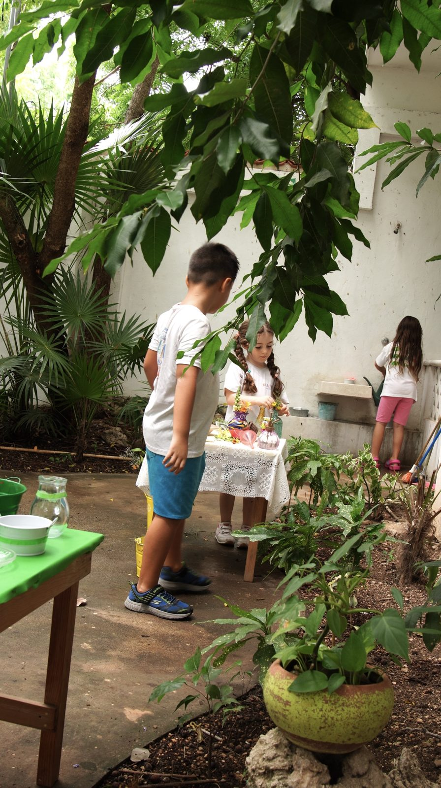
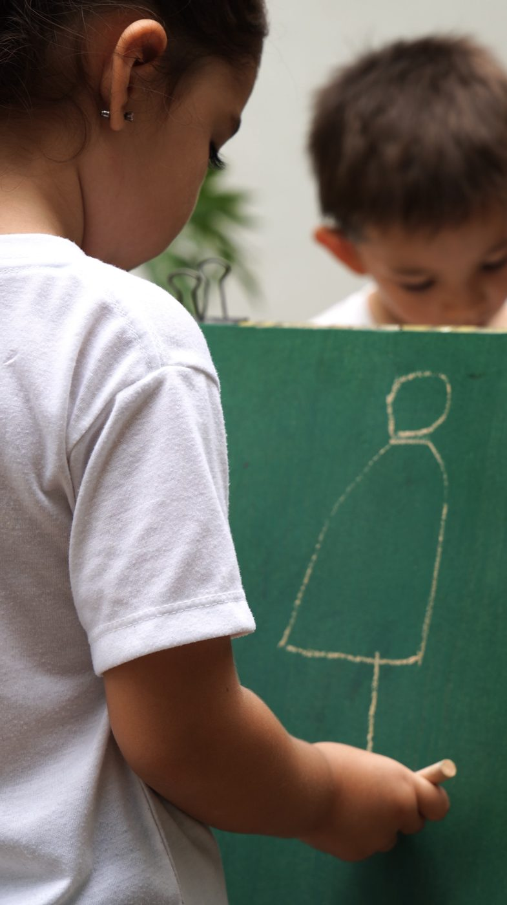
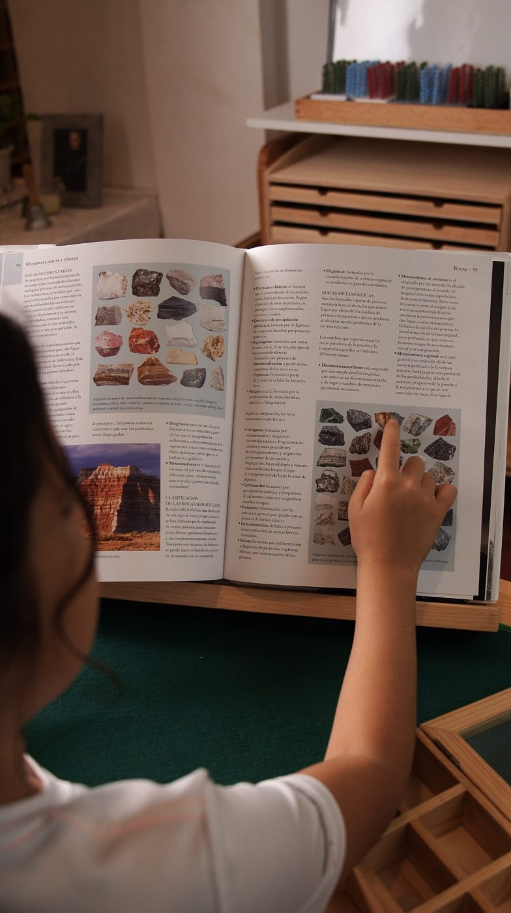
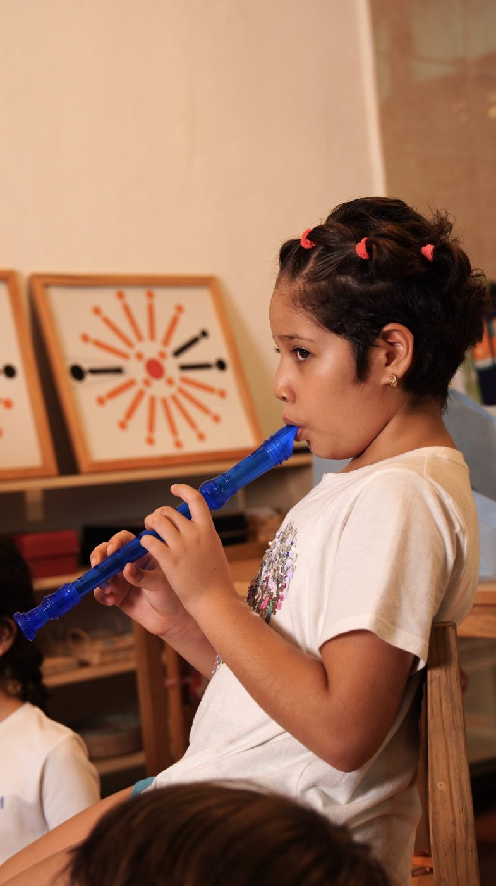
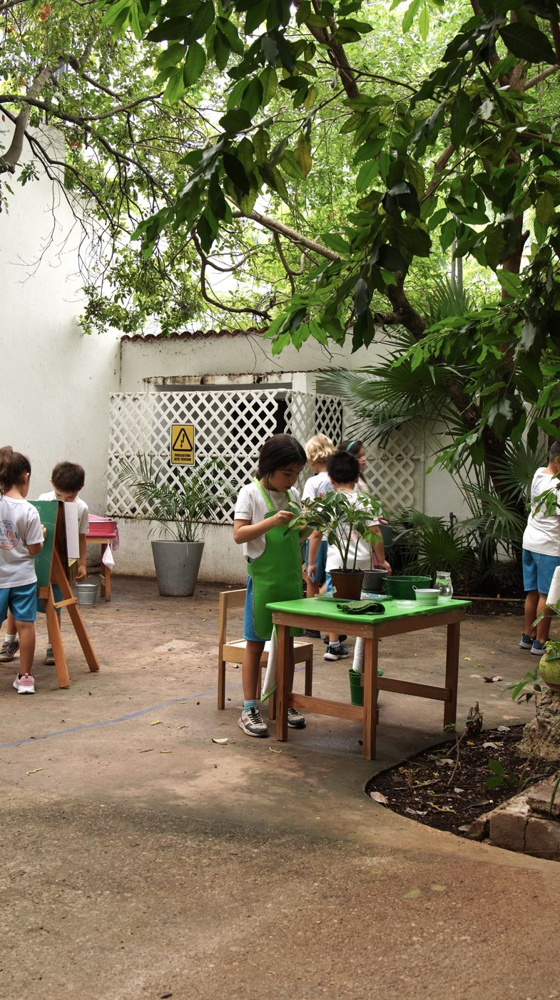
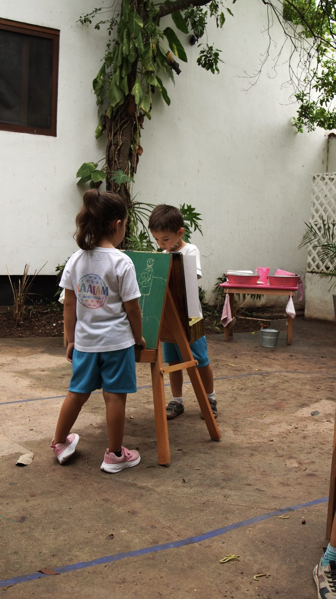

Montessori Kaalam · Playa del Carmen
Sin perder la infancia.
En Playa del Carmen, un niño puede avanzar tan lejos como pueda, y seguir con ganas de aprender al final del día.
Agendar visita
Así se vive una mañana.
Fotos de la escuela. No es un horario inventado: es lo que se ve cuando el día ya empezó.
-

Pizarra en el patio. 1.0Dibujan
Hay pizarra y caballete. Se quedan el tiempo que el dibujo pide.
-

Un libro de verdad, en Taller. 2.0Leen
Se investiga con un libro abierto y tiempo para seguir la pregunta.
-

También hay música.
La flauta entra en el día. No es un extra del viernes.
-

Plantas en el patio. 3.0Cuidan
Agua, maceta y mesa. El patio es otro ambiente, no el recreo de después.
-

El patio, en hora de trabajo. 4.0Salen
Se trabaja afuera con la misma calma que adentro.
Cuatro edades, el mismo cuidado.
De los 2 meses a los 12 años. En Casa de Niños y en Taller, las guías tienen certificación AMI. No todo el equipo la tiene, y lo decimos así.
- Nido
- 2 meses a 18 meses. Un lugar cálido para empezar a explorar.
- Comunidad infantil
- 18 meses a 3 años. Autonomía, lenguaje, movimiento y orden.
- Casa de niños
- 3 a 6 años. Vida práctica, sensorial, lenguaje, matemáticas y arte, al ritmo de cada niño.
- Taller
- 6 a 12 años. En el ciclo nuevo: lunes, miércoles y viernes en español. Martes y jueves en inglés.
También hay arte, cocina, inglés, música y yoga. En Taller se suman mandarín, tecnología y taekwondo.
Venga en hora de trabajo.
La visita es un día real, no un recorrido armado. Lunes de 11:00 a 14:00. Martes a viernes de 9:00 a 12:00.